Sesión 3 - Análisis de ciclo de vida del producto (ACV)
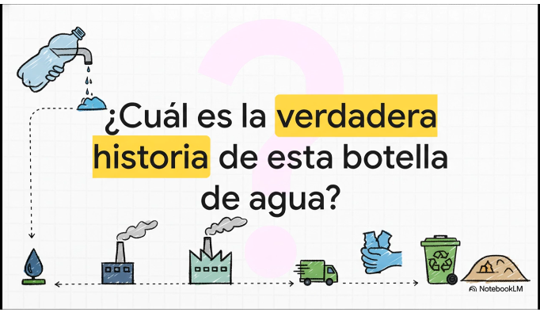
Criterios: RA4. Propón productos y servicios responsables teniendo en cuenta los principios de la economía circular.
(CE e) Se ha analizado el ciclo de vida del producto.
Objetivo de contenido: entender el enfoque de ciclo de vida y realizar un análisis estructurado de impactos por etapas.
Contenidos:
- 1 Ciclo de vida: enfoque “de la cuna a la tumba” y “de la cuna a la cuna”
- Diferencias entre alcance lineal y circular.
- Límites del sistema: qué se incluye y qué no.
- 2 Etapas del ciclo de vida (mapa estándar)
- Extracción y procesado de materias primas.
- Fabricación y ensamblaje.
- Distribución y logística.
- Uso y mantenimiento (consumos, consumibles, fallos).
- Fin de vida: reutilización, reparación, reciclaje, valorización, eliminación.
- 3 Conceptos clave del análisis
- Unidad funcional (para comparar alternativas de forma justa).
- Inventario (inputs/outputs: materiales, energía, emisiones, residuos).
- Puntos críticos / hotspots : dónde se concentra el impacto.
- 4 Indicadores ambientales habituales en ACV (a nivel didáctico)
- Huella de carbono (CO₂e), consumo energético, consumo de agua, residuos, toxicidad/sustancias.
- 5 Uso del ACV para orientar ecodiseño
- Cómo el análisis revela decisiones de diseño con mayor retorno (durabilidad, eficiencia en uso, logística, materiales).
INTRODUCCIÓN
En esta sesión vamos a trabajar el análisis del ciclo de vida del producto como una herramienta práctica para tomar decisiones responsables desde la economía circular.
Partiremos de ejemplos cercanos —como un ordenador, una botella reutilizable, una prenda de ropa o un servicio digital— para comparar enfoques lineales (“de la cuna a la tumba”) frente a circulares (“de la cuna a la cuna”) , delimitando qué etapas y procesos entran realmente en el análisis.
- Recorreremos el mapa estándar del ciclo de vida, desde la extracción de materias primas hasta el fin de vida, identificando puntos críticos de impacto mediante indicadores sencillos como huella de carbono, energía o residuos.
- El objetivo no es calcular con precisión industrial, sino entender dónde se concentra el impacto y cómo esa información permite orientar decisiones de ecodiseño : elegir materiales, mejorar la durabilidad, optimizar la logística o reducir consumos en la fase de uso, justificando propuestas de productos y servicios más responsables.
1️⃣Ciclo de vida
“de la cuna a la tumba” y “de la cuna a la cuna”
En el enfoque “de la cuna a la tumba” pensamos el producto como una línea: nace (se fabrica), se usa y termina como residuo. Es el modelo típico de muchos bienes de consumo: compras, usas y tiras. Ejemplo rápido: unos auriculares baratos que, cuando falla un cable, no se reparan y acaban en basura electrónica.
En cambio, “de la cuna a la cuna” plantea que el final no sea un vertedero, sino un nuevo inicio : reutilizar, reparar, remanufacturar o reciclar con calidad (sin “degradar” el material hasta que ya no sirva). Por ejemplo, una botella de aluminio diseñada para durar años o un portátil modular donde cambias batería/SSD y alargas la vida útil.
Aquí es clave hablar de límites del sistema : qué metemos en el análisis y qué dejamos fuera. Si analizas una camiseta, ¿incluyes el cultivo del algodón, el tinte, el transporte, los lavados durante años y el fin de vida? Si analizas un servicio digital (streaming), ¿cuentas centros de datos, redes, el dispositivo del usuario y la electricidad? Definir límites evita comparaciones “tramposas”.
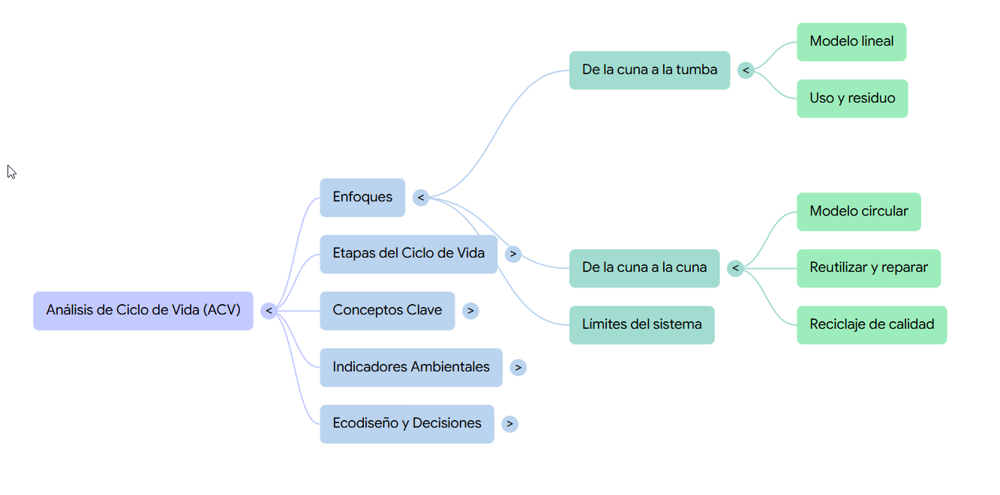
2️⃣Etapas
del ciclo de vida
Primero dibujamos el mapa estándar: extracción y procesado , fabricación , distribución , uso y mantenimiento y fin de vida . Lo importante es entender que el impacto no está solo en “fabricar”: a veces se concentra en el uso (electrodomésticos, calefacción) o en la logística (productos que viajan miles de km o requieren frío).
En extracción y procesado aparecen impactos fuertes: minería de metales, petróleo para plásticos, tala y procesado de madera, agua y fertilizantes en agricultura. Un móvil, por ejemplo, acumula impactos por metales y tierras raras; una hamburguesa industrial tiene mucha huella en producción de pienso, agua y emisiones asociadas.
En uso y mantenimiento entran consumos y “consumibles”: electricidad, agua, recambios, cartuchos, detergentes, baterías, fallos. Una impresora puede “parecer barata” pero disparar residuos por cartuchos; un coche eléctrico reduce emisiones en uso según la electricidad del mix; y en fin de vida la diferencia la marca si hay reutilización, reparación, reciclaje real o simple eliminación.
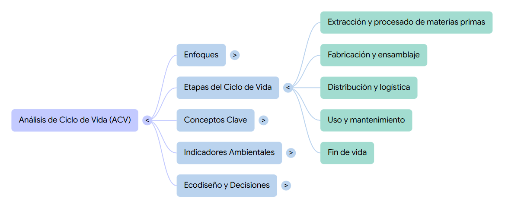
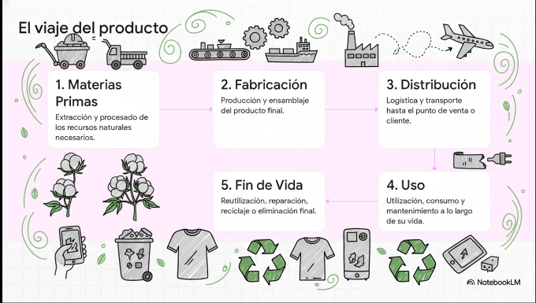
3️⃣Conceptos
clave para el análisis
La unidad funcional es el truco para comparar con justicia: no comparamos “productos” sino la función que prestan . Ejemplo: no es “una bombilla”, es “producir X lúmenes durante Y horas”. No es “una botella”, es “transportar 1 litro de bebida durante 1 año” o “100 usos”. Esto evita que gane el que “parece” mejor pero ofrece menos servicio.
El inventario (LCI) es listar entradas y salidas: materiales, energía, agua, emisiones, residuos, transporte, embalajes, piezas sustituidas… No hace falta nivel industrial: a nivel didáctico podemos usar aproximaciones (kWh estimados, km de transporte, masa de materiales) para aprender el método y, sobre todo, ver qué variables mueven la aguja .
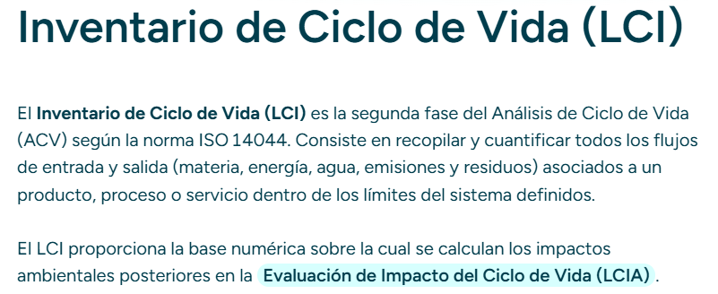
Los hotspots son los puntos donde se concentra el impacto. A veces sorprenden: en una prenda, el hotspot puede ser el lavado y secado si se hace muy a menudo; en un portátil, puede ser la fabricación ; en un servicio digital, el hotspot puede ser el consumo energético de centros de datos/red o el dispositivo. Identificar hotspots sirve para decidir “dónde actuar primero”.
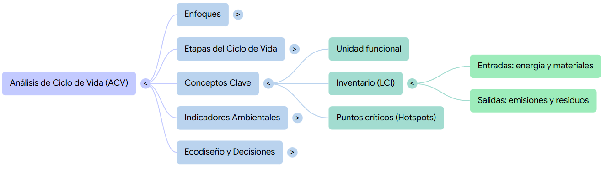
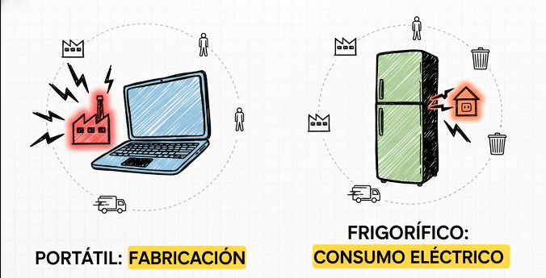
4️⃣Indicadores ambientales habituales en ACV (nivel didáctico)
La huella de carbono (CO₂e) nos permite hablar de emisiones a lo largo del ciclo de vida, no solo en el uso. Por ejemplo, un coche puede emitir menos en uso pero tener una fabricación más intensa; un producto importado por avión suele disparar CO₂e por transporte; y una dieta con más carne suele aumentar CO₂e por la cadena alimentaria.
El consumo energético (kWh) ayuda a ver eficiencia y dependencia de fuentes. Un electrodoméstico eficiente reduce impactos en la etapa de uso; un servidor o un centro de datos se evalúa mucho por su energía y por si usa renovables. En clase podemos comparar “energía total estimada” entre alternativas (ej. portátil reparable vs. reemplazo frecuente).
El agua, residuos y toxicidad/sustancias completan el cuadro. Agua: clave en agricultura y textiles (algodón) o procesos industriales. Residuos: embalajes, piezas sustituidas, fin de vida. Sustancias: tintes, retardantes de llama, disolventes, baterías… Aquí se entiende por qué el ecodiseño no es solo “reciclar”, sino también evitar materiales problemáticos y facilitar separación segura.
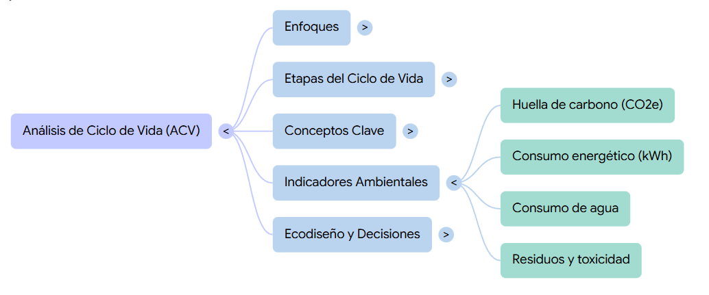
5️⃣Uso del ACV para orientar ecodiseño
El ACV sirve para priorizar decisiones con más retorno: si el hotspot está en uso , trabajas eficiencia (consumo eléctrico, modos ahorro, consumibles). Si el hotspot está en fabricación , trabajas materiales, procesos, reducir masa, aumentar reciclado, y sobre todo alargar vida útil para amortizar el impacto inicial.
En ecodiseño aparecen palancas claras: durabilidad (que no falle pronto), reparabilidad (piezas accesibles, tornillos estándar, recambios), modularidad (cambiar solo el módulo), y logística (menos volumen, embalaje mínimo, fabricación cercana). Ejemplo: una silla diseñada para desmontarse y cambiar solo el asiento; o un smartphone con batería reemplazable y actualizaciones garantizadas.
La clave final es conectar “datos” con “decisiones”: el ACV no es un informe para archivar, es un mapa para elegir mejor. Si detectas que el embalaje aporta poco, no te obsesionas con él; si el transporte o el uso dominan, atacas ahí. Con esto el alumnado puede justificar propuestas de productos/servicios responsables con argumentos técnicos: qué cambias, por qué y qué impacto esperas reducir .
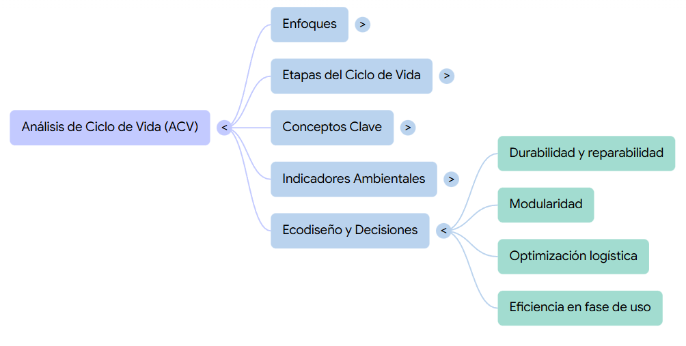
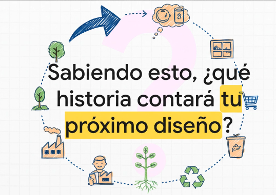
💻- Actividad
ACV Express: comparar 3 alternativas y detectar hotspots
Compara 3 opciones para la misma unidad funcional y decide cuál es más responsable según CO₂e, energía, agua y residuos , justificando hotspots y mejoras de ecodiseño .
Haz una copia en tu drive
Haz una copia de esta hoja de cálculo en tu Google Drive para realizar la tarea (ENLACE)
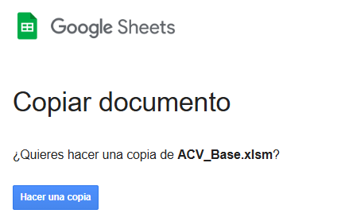
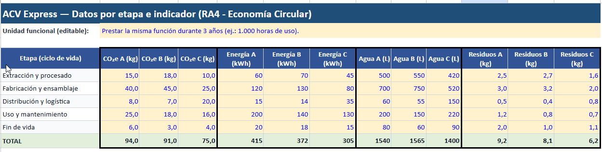
Recuerda
Launidad funcional es lareferencia común que se usa en el análisis del ciclo de vida para comparar alternativas de forma justa , porque define qué función se presta , en qué cantidad y durante cuánto tiempo . No se comparan productos “tal cual”, sino el servicio que ofrecen .
Ejemplos de unidad funcional:
- Iluminación: “Proporcionar 800 lúmenes durante 10.000 horas” (no “una bombilla”).
- Envases: “Transportar 1 litro de bebida durante 100 usos” (no “una botella”).
- Movilidad: “Desplazar una persona 1 km” o “10.000 km al año” .
- Tecnología: “Disponer de un portátil funcional durante 5 años para tareas ofimáticas” .
- Textil: “Vestir una prenda durante 50 usos/lavados” .
Hoja 1 — DATOS
Tabla con filas = etapas del ciclo de vida y columnas = indicadores para cada alternativa.
Filas (A2:A6):
- Extracción/procesado
- Fabricación/ensamblaje
- Distribución/logística
- Uso/mantenimiento
- Fin de vida
Alternativas (tres columnas por indicador):
- A: “Producto barato”
- B: “Producto reparable”
- C: “Servicio/alquiler” (o “remanufacturado”)
Ejemplo de columnas:
- CO2e_A | CO2e_B | CO2e_C
- kWh_A | kWh_B | kWh_C
- Agua_A | Agua_B | Agua_C
- Residuos_A | Residuos_B | Residuos_C
ESCOGE UNA UNIDAD FUNCIONAL (Cada alumno/a diferente)
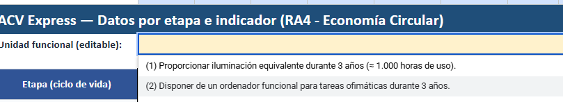
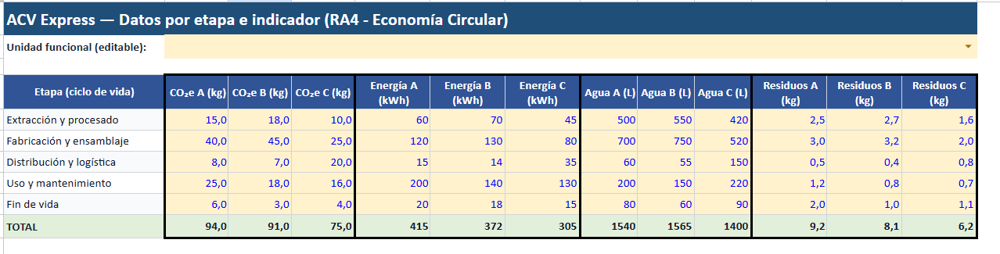
- Pega las tres opciones:
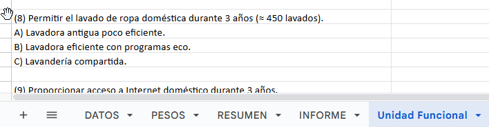
INSTRUCCIONES DE LA TAREA
Con la hoja ACV_Express_Base.xlsx que te pasé, la tarea se hace:
Paso 0 — Abrir y entender la estructura
El archivo tiene 4 pestañas:
- DATOS → donde están los valores por etapa e indicador (editable).
- PESOS → donde se ajustan los pesos del índice (editable).
- RESUMEN → donde salen resultados automáticos (no tocar).
- INFORME → plantilla para redactar el análisis (rellenar).
Paso 1 — Elegir la unidad funcional
- Ve a la hoja INFORME .
- Localiza la celda de “Unidad funcional (editable)”
- Pega una de tus opciones, por ejemplo:
(2) Disponer de un ordenador funcional para tareas ofimáticas durante 3 años.
Regla: la unidad funcional debe implicar misma función + periodo (3 años) + (si quieres) cantidad aproximada .
Paso 2 — (Opcional) Cambiar los datos del inventario
Si quieres “JUGAR” con escenarios:
- Ve a la hoja DATOS .
- Edita solo el bloque de celdas amarillas B6:M10 (valores por etapa).
- Filas = etapas del ciclo de vida (Extracción, Fabricación, Distribución, Uso, Fin de vida)
- Columnas = indicadores por alternativa (A, B, C)
Importante para que no se rompa el ejercicio:
- No borres títulos ni cambies nombres de etapas.
- Mantén valores numéricos (no texto).
- No cambies unidades (CO₂e, kWh, L, kg).
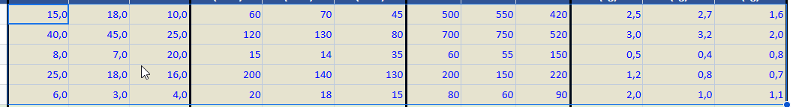
Paso 3 — Ajustar los pesos del índice
- Ve a la hoja PESOS .
- Cambia los pesos en B4:B7 (celdas editables):
- CO₂e
- Energía (kWh)
- Agua (L)
- Residuos (kg)
Regla obligatoria: la suma debe ser 1,00 (100%). Ejemplo típico: 0,40 / 0,30 / 0,20 / 0,10
- JUSTIFICA TU ELECCIÓN:
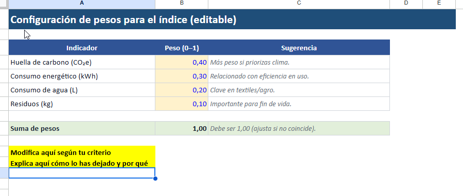
Paso 4 — Ver resultados automáticos (sin tocar fórmulas)
-
Ve a la hoja RESUMEN . Aquí ya aparecen calculados automáticamente:
-
Totales por alternativa (A, B, C) para cada indicador.
- Hotspots Top1 y Top2 por alternativa e indicador (la etapa que más pesa).
- Normalización (para comparar indicadores con unidades distintas).
- Índice ponderado final y ranking de alternativas.
NO se debe modificar esta hoja: solo leerla y usarla para justificar.
Paso 5 — Hacer el análisis y redactar el informe
- Ve a INFORME .
- Rellena los apartados (están pensados para copiar/pegar datos del RESUMEN):
Lo que deben escribir (mínimo):
- Ganadora según índice final: A / B / C
- Dos datos numéricos que lo justifiquen (ej.: “B tiene menor CO₂e total y menor energía total”).
- Hotspot principal (qué etapa concentra el impacto) y su lectura:
- Ej.: “En A el hotspot es USO → conviene mejorar eficiencia o consumibles”.
- 2 propuestas de ecodiseño coherentes con el hotspot:
- Durabilidad / reparabilidad / logística / materiales / eficiencia en uso / fin de vida.
- Trade-off (algo que mejora y algo que empeora) si lo hay:
- Ej.: “B reduce residuos pero sube fabricación”.
VIDEO-EXPLICACIÓN
Paso 6 — Entrega
Según cómo lo pidas:
- Debes incrustar la hoja de cálculo en tu portfolio con permisos de lectura
-
- Recuerda: clic en insertar
- Añade además algunas capturas de pantalla
- La tarea se sube en las horas de clase, y la audio descripción se realiza en casa y se actualiza en casa.
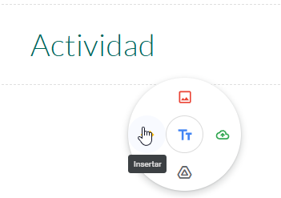
AUDIO DESCRIPCIÓN
Sube también una audio descripción de tus CONCLUSIONES al portfolio
- Sube un audio a tu Portfolio (puedes grabarte en Whatsapp por ejemplo y compartir por Drive o Correo, por ejemplo)
💻 Moodle & Portfolio
- Sube la tarea a Moodle e incrusta y la hoja de cálculo (captura de la pestaña INFORME) a tu Portfolio